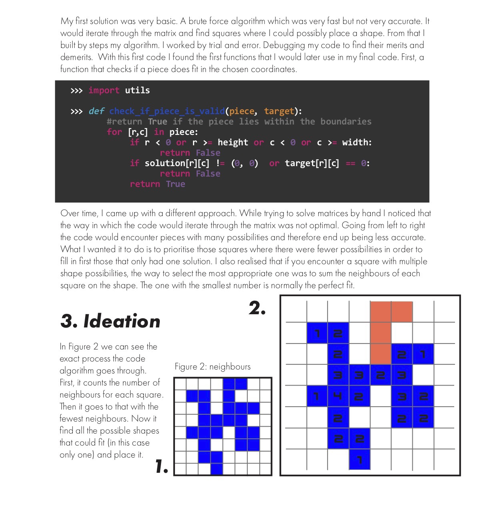
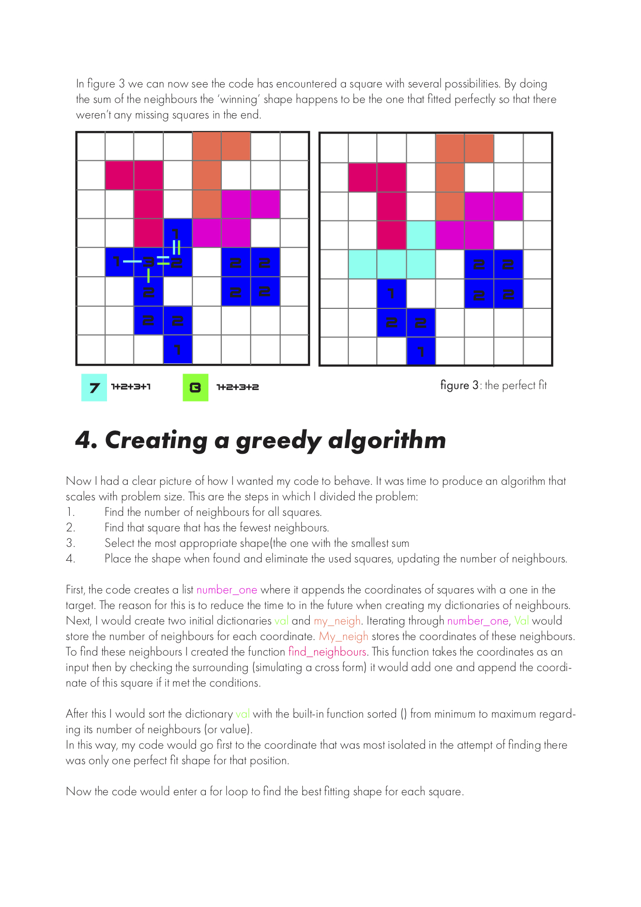
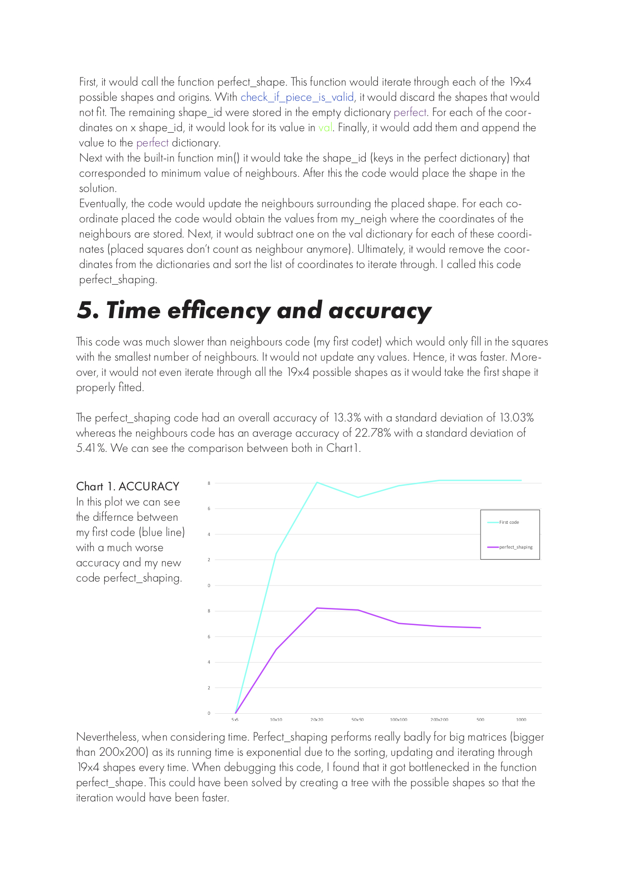
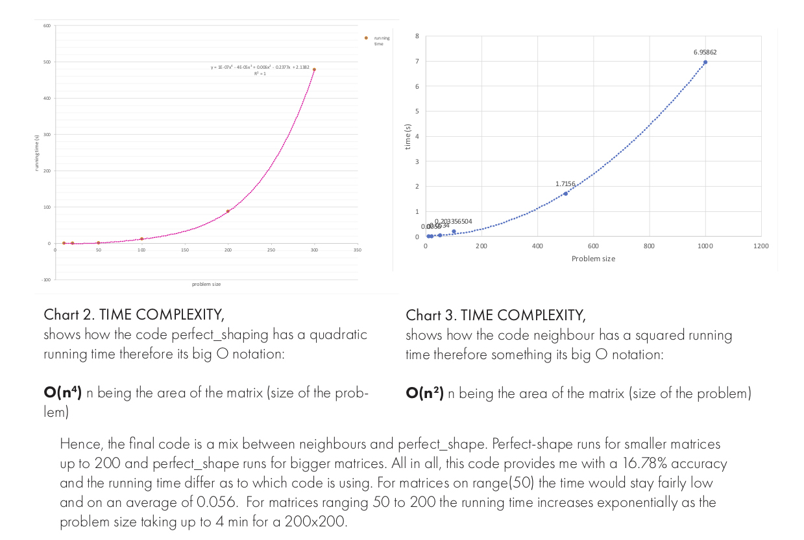

A polyomino is a plane geometric figure formed by joining one or more equal squares edge to edge. Tetrominoes are polyominoes of four squares; they are popular for their use in the video game Tetris. Tetris pieces can have 19 types of shape, as shown in Figure 1 with an identification number, called shapeID, for each shape. The aim of this project was to design an algorithm to solve the tetriling reassembly. This problem consists of finding a perfect tiling solution of an arbitrary finite polyomino region, called target region, or target shape, by using a given set of Tetris pieces. The objective is to perform the tiling as fast as possible while minimizing the sum of both uncovered squares in the target region and extra squares out of it.
1. Applying techniques for analysing the running time of algorithms.
2. Using design methods for implementing programmes that scale efficiently with problem size.
3. Designing and implementing their own algorithms and data structures in Python.
   